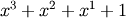

numpy.polyder¶
- numpy.polyder(p, m=1)¶
Return the derivative of the specified order of a polynomial.
Parameters : p : poly1d or sequence
Polynomial to differentiate. A sequence is interpreted as polynomial coefficients, see poly1d.
m : int, optional
Order of differentiation (default: 1)
Returns : der : poly1d
A new polynomial representing the derivative.
Examples
The derivative of the polynomial  is:
>>> p = np.poly1d([1,1,1,1]) >>> p2 = np.polyder(p) >>> p2 poly1d([3, 2, 1])
which evaluates to:
>>> p2(2.) 17.0
We can verify this, approximating the derivative with (f(x + h) - f(x))/h:
>>> (p(2. + 0.001) - p(2.)) / 0.001 17.007000999997857
The fourth-order derivative of a 3rd-order polynomial is zero:
>>> np.polyder(p, 2) poly1d([6, 2]) >>> np.polyder(p, 3) poly1d([6]) >>> np.polyder(p, 4) poly1d([ 0.])